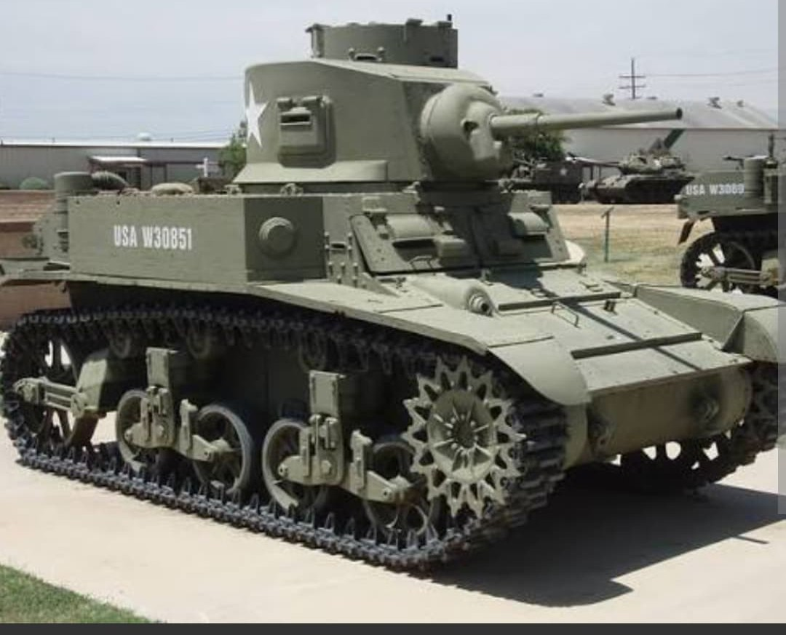
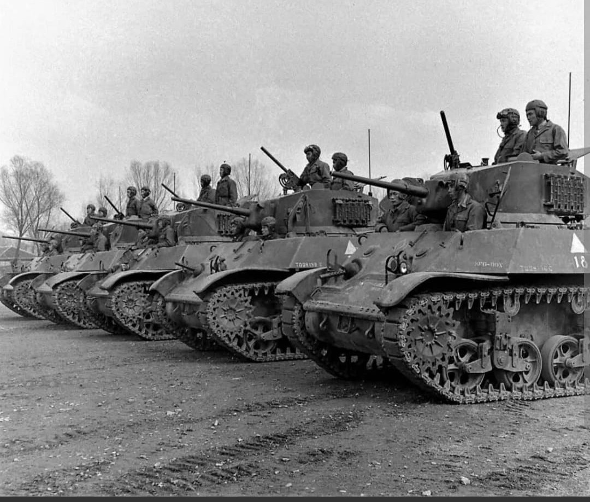
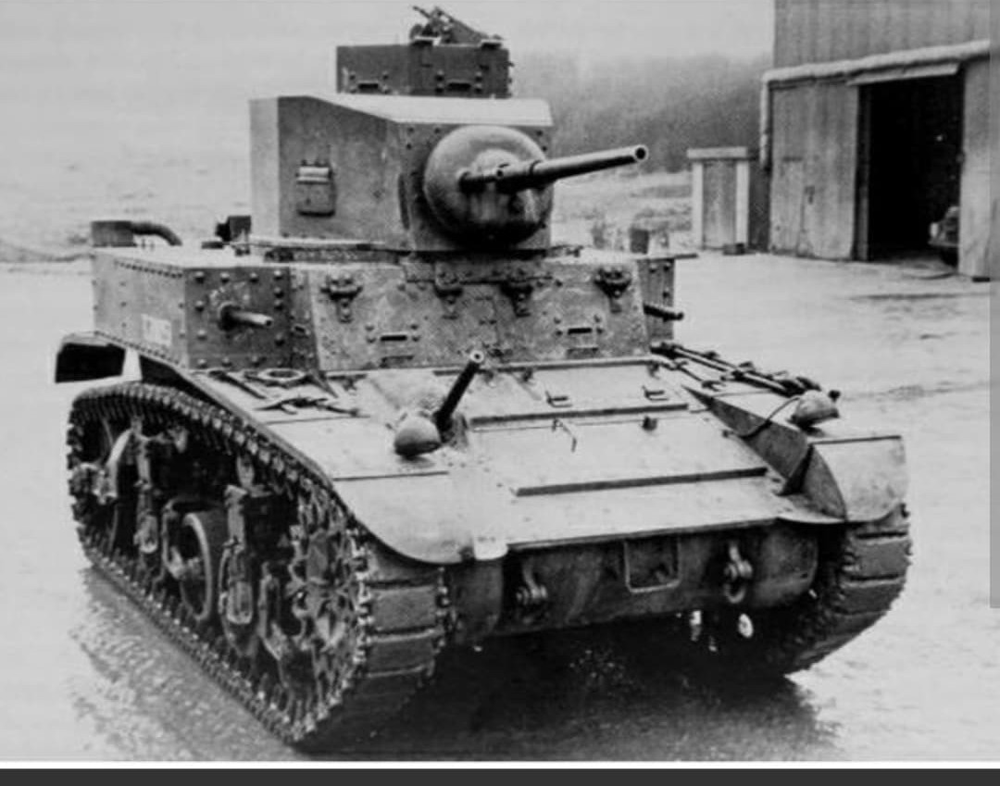

Le char léger rapide et fiable qui a équipé les forces alliées d'Afrique du Nord au Pacifique

Le Char léger M3 (surnommé « Stuart » ou « Honey » par les forces britanniques) est le premier char américain engagé au combat par les Alliés durant la Seconde Guerre mondiale.
Développé pour remplacer le M2 devenant obsolète, le M3 a servi de char de combat principal au début du conflit avant de se réorienter vers des missions de reconnaissance tactique, d'éclairage et d'appui d'infanterie au fur et à mesure de l'apparition des blindés moyens et lourds adverses.
Produit par l'**American Car and Foundry Company** à partir de 1941, le M3 reprenait une architecture à moteur arrière et transmission avant. Il était propulsé par un moteur d'aviation en étoile Continental W-670 (ou un moteur diesel Guiberson T-1020) développant 250 chevaux.
D'une masse de **12,7 tonnes**, le Stuart se distinguait par une vitesse de pointe exceptionnelle pour l'époque de **58 km/h sur route**. Son armement principal consistait en un canon de **37 mm M6** efficace contre les blindés légers, associé à jusqu'à trois mitrailleuses Browning M1919 de 7,62 mm.

Fourni en grande quantité aux Britanniques via le programme Prêt-Bail, le Stuart fit ses preuves en Afrique du Nord dès la fin de l'année 1941 lors de l'**Opération Crusader**. Apprécié par ses équipages pour sa mécanique très fiable (d'où son surnom Honey), il souffrait néanmoins d'un canon trop léger face aux Panzer III et IV allemands.
Dans le Pacifique, sa légèreté et sa taille compacte en firent un atout précieux pour les Marines et l'US Army dans la jungle face au blindage très vulnérable des chars japonais. En Europe de l'Ouest à partir de 1944, les variantes évoluées (notamment le **M5 Stuart**) furent principalement affectées aux unités de reconnaissance blindée.

Produit à plus de **22 000 exemplaires** (en comptant les versions M3, M3A1, M3A3 et M5/M5A1), le Stuart est l'un des chars légers les plus produits du conflit.
Son châssis servit également de base à l'obusier automoteur **M8 Scott** (armé d'un canon court de 75 mm). Après la guerre, de nombreux M3 et M5 poursuivirent leur carrière dans les armées d'Amérique latine et d'Asie pendant plusieurs décennies.
Page du Musée HOP WW2 – Section Véhicules Terrestres Américains